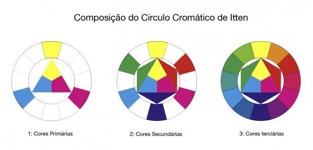

O círculo cromático é composto pelas as cores primárias, secundárias e terciárias.
As cores primárias são cores puras, que não foram criadas pela a combinação de outras cores.
As cores secundárias são cores criadas pela a combinação das cores primárias.
As cores terciárias são cores criadas pela a combinação das cores secundárias.
